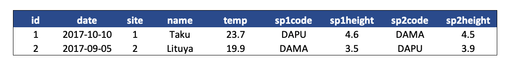

7 Session 7: Data Modeling Essentials
7.1 Data Modeling & Tidy Data
7.1.1 Learning Objectives
- Understand basics of relational data models aka tidy data
- Learn how to design and create effective data tables
7.1.2 Introduction
In this lesson we are going to learn what relational data models are, and how they can be used to manage and analyze data efficiently. Relational data models are what relational databases use to organize tables. However, you don’t have to be using a relational database (like mySQL, MariaDB, Oracle, or Microsoft Access) to enjoy the benefits of using a relational data model. Additionally, your data don’t have to be large or complex for you to benefit. Here are a few of the benefits of using a relational data model:
- Powerful search and filtering
- Handle large, complex data sets
- Enforce data integrity
- Decrease errors from redundant updates
Simple guidelines for data management
A great paper called ‘Some Simple Guidelines for Effective Data Management’ (Borer et al. 2009) lays out exactly that - guidelines that make your data management, and your reproducible research, more effective. The first six guidelines are straightforward, but worth mentioning here:
- Use a scripted program (like R!)
- Non-proprietary file formats are preferred (eg: csv, txt)
- Keep a raw version of data
- Use descriptive file and variable names (without spaces!)
- Include a header line in your tabular data files
- Use plain ASCII text
The next three are a little more complex, but all are characteristics of the relational data model:
- Design tables to add rows, not columns
- Each column should contain only one type of information
- Record a single piece of data only once; separate information collected at different scales into different tables.
7.1.3 Recognizing untidy data
Before we learn how to create a relational data model, let’s look at how to recognize data that does not conform to the model.
Data Organization
This is a screenshot of an actual dataset that came across NCEAS. We have all seen spreadsheets that look like this - and it is fairly obvious that whatever this is, it isn’t very tidy. Let’s dive deeper in to exactly why we wouldn’t consider it tidy.

Multiple tables
Your human brain can see from the way this sheet is laid out that it has three tables within it. Although it is easy for us to see and interpret this, it is extremely difficult to get a computer to see it this way, which will create headaches down the road should you try to read in this information to R or another programming language.

Inconsistent observations
Rows correspond to observations. If you look across a single row, and you notice that there are clearly multiple observations in one row, the data are likely not tidy.

Inconsistent variables
Columns correspond to variables. If you look down a column, and see that multiple variables exist in the table, the data are not tidy. A good test for this can be to see if you think the column consists of only one unit type.

Marginal sums and statistics
Marginal sums and statistics also are not considered tidy, and they are not the same type of observation as the other rows. Instead, they are a combination of observations.

7.1.4 Good enough data modeling
Denormalized data
When data are “denormalized” it means that observations about different entities are combined.

In the above example, each row has measurements about both the site at which observations occurred, as well as observations of two individuals of possibly different species found at that site. This is not normalized data.
People often refer to this as wide format, because the observations are spread across a wide number of columns. Note that, should one encounter a new species in the survey, we wold have to add new columns to the table. This is difficult to analyze, understand, and maintain.
Tabular data
Observations. A better way to model data is to organize the observations about each type of entity in its own table. This results in:
Separate tables for each type of entity measured
Each row represents a single observed entity
Observations (rows) are all unique
This is normalized data (aka tidy data)
Variables. In addition, for normalized data, we expect the variables to be organized such that:
- All values in a column are of the same type
- All columns pertain to the same observed entity (e.g., row)
- Each column represents either an identifying variable or a measured variable
Challenge
Try to answer the following questions:
What are the observed entities in the example above?
What are the measured variables associated with those observations?
Answer:
If we use these questions to tidy our data, we should end up with:
- one table for each entity observed
- one column for each measured variable
- additional columns for identifying variables (such as site ID)
Here is what our tidy data look like:
Note that this normalized version of the data meets the three guidelines set by (Borer et al. 2009):
- Design tables to add rows, not columns
- Each column should contain only one type of information
- Record a single piece of data only once; separate information collected at different scales into different tables.
7.1.5 Using normalized data
Normalizing data by separating it into multiple tables often makes researchers really uncomfortable. This is understandable! The person who designed this study collected all of these measurements for a reason - so that they could analyze the measurements together. Now that our site and species information are in separate tables, how would we use site elevation as a predictor variable for species composition, for example? The answer is keys - and they are the cornerstone of relational data models.
When one has normalized data, we often use unique identifiers to reference particular observations, which allows us to link across tables. Two types of identifiers are common within relational data:
- Primary Key: unique identifier for each observed entity, one per row
- Foreign Key: reference to a primary key in another table (linkage)
Challenge
In our normalized tables above, identify the following:
- the primary key for each table
- any foreign keys that exist
Answer
The primary key of the top table is id. The primary key of the bottom table is site.
The site column is the primary key of that table because it uniquely identifies each row of the table as a unique observation of a site. In the first table, however, the site column is a foreign key that references the primary key from the second table. This linkage tells us that the first height measurement for the DAPU observation occurred at the site with the name Taku.
Entity-Relationship Model (ER)
An Entity-Relationship model allows us to compactly draw the structure of the tables in a relational database, including the primary and foreign keys in the tables.
In the above model, one can see that each site in the sites observations table must have one or more observations in the species observations table, whereas each species opservation has one and only one site.
Merging data
Frequently, analysis of data will require merging these separately managed tables back together. There are multiple ways to join the observations in two tables, based on how the rows of one table are merged with the rows of the other.
When conceptualizing merges, one can think of two tables, one on the left and one on the right. The most common (and often useful) join is when you merge the subset of rows that have matches in both the left table and the right table: this is called an INNER JOIN. Other types of join are possible as well. A LEFT JOIN takes all of the rows from the left table, and merges on the data from matching rows in the right table. Keys that don’t match from the left table are still provided with a missing value (na) from the right table. A RIGHT JOIN is the same, except that all of the rows from the right table are included with matching data from the left, or a missing value. Finally, a FULL OUTER JOIN includes all data from all rows in both tables, and includes missing values wherever necessary.

Sometimes people represent these as Venn diagrams showing which parts of the left and right tables are included in the results for each join. These however, miss part of the story related to where the missing value come from in each result.

In the figure above, the blue regions show the set of rows that are included in the result. For the INNER join, the rows returned are all rows in A that have a matching row in B.
7.1.6 Data modeling exercise
- Break into groups, 1 per table
To demonstrate, we’ll be working with a tidied up version of a dataset from ADF&G containing commercial catch data from 1878-1997. The dataset and reference to the original source can be viewed at its public archive: https://knb.ecoinformatics.org/#view/df35b.304.2. That site includes metadata describing the full data set, including column definitions. Here’s the first catch table:
## Region Year Chinook Sockeye Coho Pink Chum All notesRegCode
## 1 SSE 1886 0 5 0 0 0 5
## 2 SSE 1887 0 155 0 0 0 155
## 3 SSE 1888 0 224 16 0 0 240
## 4 SSE 1889 0 182 11 92 0 285
## 5 SSE 1890 0 251 42 0 0 292
## 6 SSE 1891 0 274 24 0 0 298And here’s the region_defs table:
## code mgmtArea areaClass regionCode
## 1 GSE Unallocated Southeast Alaska mgmtArea 1
## 2 NSE Northern Southeast Alaska mgmtArea 1
## 3 SSE Southern Southeast Alaska mgmtArea 1
## 4 YAK Yakutat mgmtArea 1
## 5 PWSmgmt Prince William Sound Management Area mgmtArea 2
## 6 BER Bering River Subarea Copper River Subarea subarea 2
## notes
## 1 Included are Southeastern Alaska catches which could not be assigned\nto Northern or Southern Southeastern Alaska or Yakutat
## 2 Northern Southern Alaska includes Districts 9 through 16 from summer straight northwest to and including the fairweather Grounds but excludes Yakutat fisheries unless otherwise noted.
## 3
## 4
## 5 Includes the Bering River and Copper River and Prince William Sound Subareas
## 6Challenge
Using the Excalidraw live session your instructor starts, work through the following tasks:
Draw an ER model for the tables
- Indicate the primary and foreign keys
Is the
catchtable in normal (aka tidy) form?If so, what single type of entity was observed?
If not, how might you restructure the data table to make it tidy?
- Draw a new ER diatram showing this re-designed data structure

Optional Extra Challenge
If you have time, take on this extra challenge with your group.
Navigate to this dataset: Richard Lanctot and Sarah Saalfeld. 2019. Utqiaġvik shorebird breeding ecology study, Utqiaġvik, Alaska, 2003-2018. Arctic Data Center. doi:10.18739/A23R0PT35
Try to determine the primary and foreign keys for the following tables:
- Utqiagvik_adult_shorebird_banding.csv
- Utqiagvik_egg_measurements.csv
- Utqiagvik_nest_data.csv
- Utqiagvik_shorebird_resightings.csv
References
Borer, Elizabeth, Eric Seabloom, Matthew B. Jones, and Mark Schildhauer. 2009. “Some Simple Guidelines for Effective Data Management.” Bulletin of the Ecological Society of America 90: 205–14. https://doi.org/10.1890/0012-9623-90.2.205.